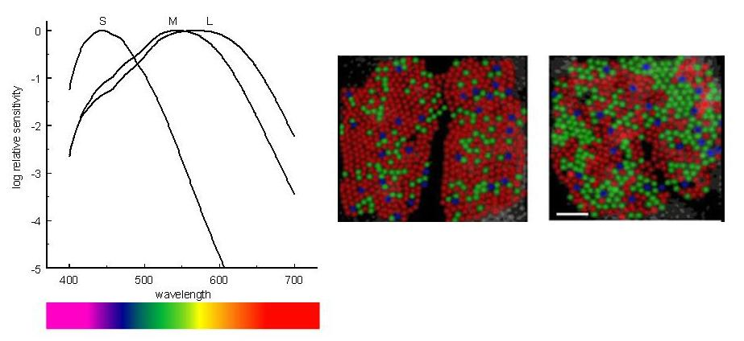
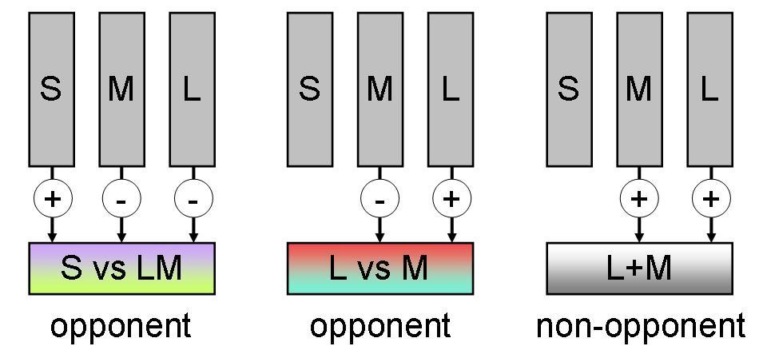
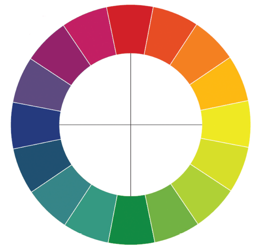
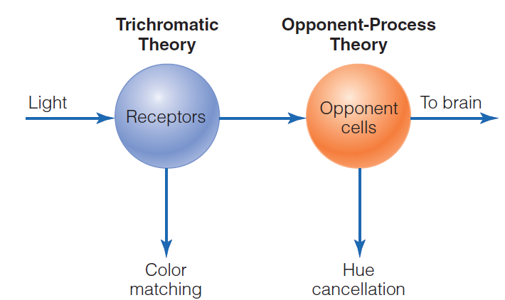
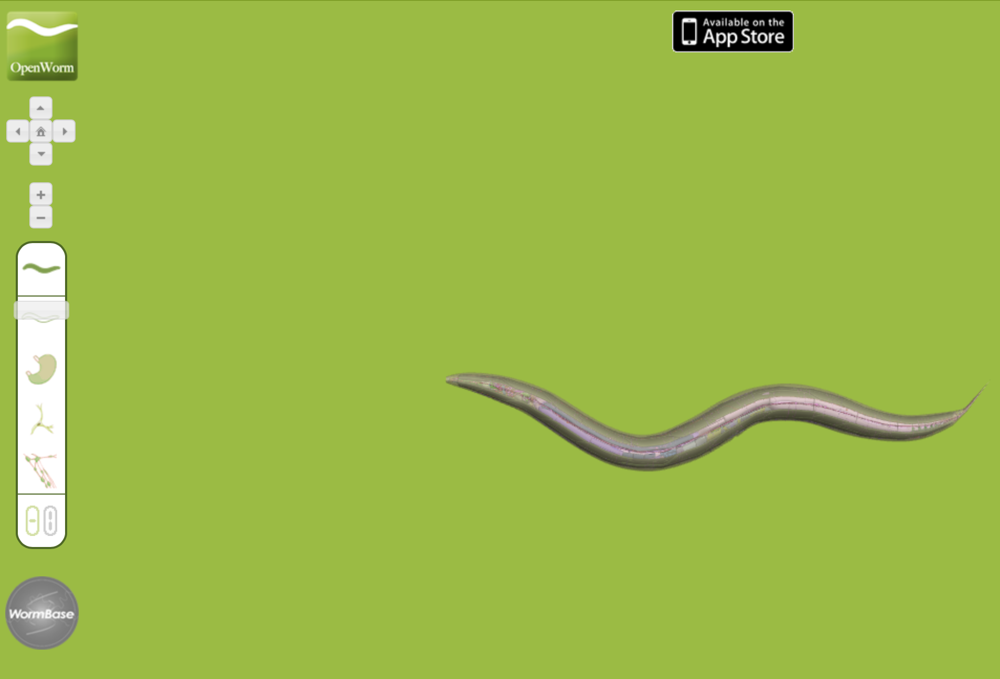

The Mind-Body Problem
Chapter 2
Relationship: Theory vs Physical World
Thought experiments
- Philosophers use thought experiments to uncover our intuitions and biases about the mind
- Framework to identify faulty logical assumptions and knowledge gaps
- Clears field to set up and characterize a valid problem
- Restricted to abstract domain of Concepts and Theory
The mind and the brain
- The mind-brain problem
- defines relationships between physical and mental events
- How do mental states arise from a physical brain?
The mereological fallacy
Does saying “My brain feels pain” make sense?
What about “the brain recognizes words”?
Paul Nunez will have much more to say about the issues of parts/wholes and what is top/bottom
Qualia
- The subjective quality of perceptions
- Sensations
- The colour red
- The smell of a rose
- The feeling of pain
- How would you describe “red” to someone else?
Try this: Describing red
- Choose something with prominent qualia, such as a red rose (see figure 2.1). How would you describe it to someone else? How would you describe colour to someone without sight?
Dualism and monism
- René Descartes and substance dualism (Cartesian dualism)
- Res cogitans and Res extensa
- Other types of dualism
- Monism (several kinds?)
Dualism
- There are two types of substance
- Mind and matter
- But how do they interact?
Monism
- There is one type of matter
- Usually physical monism and matter
- But doesn’t have to be
- Usually physical monism and matter
- How does physical matter give rise to subjective experience?
The knowledge argument
- The “Mary” colour thought experiment
- For and against physicalism
Mary the monochrome scientist
- With all thought experiments it is important that you really do stop and think. There is no “right” answer, just your intuition. What do you think Mary will think, and can you give reasons for your belief ? Look at the image of the grey and red roses to focus your thoughts.


The inverted colour spectrum
- Could you “see” violet when I “see” red?


 
Colour Perception
 
The problem of pain
- The physical aspect of pain
- The mental aspect of pain
- Pain in babies (27 weeks is gestation; 2nd trimester)
P-ZOMBIES
- Philosophical zombies
- Could we have a creature that appears in every way to be conscious, but isn’t?
- Is consciousness essential?
- Being conceivable
Materialism
- A type of monism
- All there is is matter
- Physics captures everything
More materialism
- Reductive materialism
- Eliminative materialism
- Getting rid of the problem of qualia
- A trick of how we think and speak
Dualism vs Monism
| Topic | Dualism | Monism |
|---|---|---|
| Substance Dualism | Proposes that mind and matter are fundamentally different substances. Fits well with intuitive experiences and beliefs about the soul. | N/A |
| Dualism Problems | Faces the issue of how mind and matter interact; also, mental material is not accessible through physical or scientific methods. | N/A |
| Parallelism/Occasionalism | Attempts to explain the interaction between mind and matter through divine intervention. | N/A |
| Property Dualism | Introduces the concept that there is one substance but two kinds of properties: physical and mental. | N/A |
| Emergentism | N/A | A form of property dualism; mental properties emerge when matter is organized in certain complex ways. |
| Idealism | N/A | Proposes that the world is fundamentally mental; material objects exist only in the mind. |
| Materialism/Physicalism | N/A | Proposes that only physical matter exists, governed by the laws of physics. |
| Neutral Monism | N/A | Suggests that mind and matter are different aspects of a single substance. |
Mary the Color Scientist
| Argument | Supports Dualism | Supports Monism |
|---|---|---|
| The “Mary” Colour Experiment | If Mary learns something new upon seeing color, it suggests that subjective experience (qualia) is not fully captured by physical explanations. | If Mary doesn’t learn anything new, it suggests that complete physical knowledge is sufficient to account for subjective experiences. |
| Dennett’s Counterargument | N/A | Dennett argues that Mary would not be surprised, suggesting that subjective experiences can be fully understood through physical properties. |
| Knowledge by Description vs Knowledge by Acquaintance | N/A | Churchland uses Bertrand Russell’s distinction to argue that while Mary might gain a new form of knowledge (by acquaintance), this doesn’t necessarily introduce new facts beyond physical explanations. |
| Experience as Part of Knowledge | Some argue that Mary couldn’t possibly know everything about the world without experiential knowledge, which could be seen as a point against materialist monism. | N/A |
| The Hard Problem of Consciousness | The inability of materialist monism to solve the “hard problem” (how physical matter gives rise to subjective experience) can be seen as a point in favor of dualism. | Some argue that the “hard problem” might be an artifact of our current understanding and could be solved within a monist framework. |
Inverted Color Spectrum
| Argument | Supports Dualism | Supports Monism |
|---|---|---|
| Inverted Spectrum Argument | The idea that people could experience colors differently (e.g., your red is my green) and that this is undetectable suggests that subjective experiences (qualia) are not fully captured by physical explanations. | If it’s possible to detect inversion behaviorally by asking people to make judgments about small differences in colors, then the physicalist view that all experiences can be explained physically is supported. |
| Hofstadter’s Critique | N/A | Hofstadter argues that the inverted spectrum argument is incoherent and that experiences are not detached from the physical brain or the world. This supports a monist view. |
| Asymmetries in Color Space | N/A | The existence of asymmetries in color space could make it impossible to find an inversion that is behaviorally undetectable, supporting the idea that experiences can be fully explained physically. |
| Neuroscience of Vision | The argument that neuroscience can’t tell us what we feel when we see red could be seen as a point in favor of dualism. | If neuroscience can eventually explain what we feel when we see colors, this would support monism. |
| Relation to Other Colors | The idea that something is left over about the “redness of red” and the “greenness of green” that isn’t captured by their relation to other colors could be seen as a point in favor of dualism. | If the experience of colors can be fully described in terms of their relations to other colors and their positions in color space, this would support monism. |
The Problem of Pain
| Aspect/Argument | Supports Dualism | Supports Monism |
|---|---|---|
| Private Nature of Pain | Pain is a private experience that cannot be fully described, supporting the idea that there is a non-physical aspect to experience. | N/A |
| Neuroscience of Pain | While we understand the neurobiology of pain, this doesn’t explain the subjective experience of pain, leaving room for a dualistic interpretation. | The detailed physiological account of pain suggests that the experience can be fully explained physically. |
| Congenital Analgesia | The existence of individuals who cannot feel pain suggests that the physical and mental aspects of pain are not identical, supporting dualism. | N/A |
| Painkillers and Dissociation | The fact that painkillers can remove the sensation of pain while leaving the physical state unchanged suggests a dualistic view. | The existence of drugs that can modulate the experience of pain suggests that the experience is rooted in physical processes. |
| Pain in Babies | The debate about whether babies feel pain could be seen as highlighting the difficulty of correlating physical and mental states, supporting dualism. | Advances in understanding the neurology of infants and fetuses suggest that the experience of pain is physically grounded. |
| Argument by Analogy | The argument by analogy to the existence of other minds suggests that we can never be certain about others’ experiences, supporting dualism. | N/A |
| Wittgenstein’s Critique | Wittgenstein’s critique questions the assumption that everyone experiences pain the same way, leaving room for dualistic interpretations. | N/A |
| Dennett’s View | N/A | Dennett argues that our concept of pain is so defective that it doesn’t refer to anything real, supporting a monistic view. |
| Robots and Pain | The question of whether a robot could feel pain highlights the difficulty of replicating subjective experiences, supporting dualism. | If it’s possible to program a robot to avoid harm without it needing to “feel” pain, this could support a monistic view. |
Phenomenal Zombies
| Argument/Idea | Suggests Consciousness is Essential | Suggests Consciousness is Non-Essential |
|---|---|---|
| Thought Experiments | Different intuitions about thought experiments like p-zombies could suggest that consciousness has an essential role, depending on one’s perspective. | Different intuitions about thought experiments like p-zombies could suggest that consciousness is non-essential, depending on one’s perspective. |
| Role of Pain | The experience of pain seems to serve a purpose in avoiding harm, suggesting that consciousness has a function. | P-zombies would also avoid harm without experiencing pain, suggesting consciousness is not essential for this function. |
| Existence of P-Zombies | If p-zombies cannot exist, then consciousness must serve some essential function. | If p-zombies can exist, then consciousness is a non-essential extra. |
| Epiphenomenalism | N/A | Consciousness doesn’t play any causal role in our physical states. |
| Conceivability vs. Possibility | If p-zombies are inconceivable, then consciousness might be essential. | If p-zombies are conceivable but not possible, it suggests that consciousness might be non-essential but somehow tied to our physical makeup. |
| Dennett’s Argument | Dennett argues that consciousness is a complex of mental states, behaviors, and dispositions that cannot be simply dispensed with. | N/A |
Functionalism
- Silicon neurons and silicon brains
- The “China brain” thought experiment
- Can the population of China signal and act like a brain?
- Conversely: can a neuron be conscious?
A Function for Consciousness?
Neurons

- The brain has about 100 billion neurons.
- Each neuron might be connected to about 1000 others.
- Does consciousness really arise from just a lot of these connected together?
Arguments against functionalism
- Searle and the Chinese room
- All syntax and no semantics
- Is the “systems reply” adequate?
Mysterianism
- The problem of consciousness is too complex for our (human) minds
- It is like Beau the poodle trying to understand the nature of language and grammar: it is beyond the capabilities of his brain
What is it like to be a worm?

Summary
- What is the difference between mind and brain?
- The hard problem is why does it feel like something to be you
- How can the feeling of something, mind, arise from a purely physical system?
- How many types of substance are there?
- Does materialism / physicalism completely describe the universe?